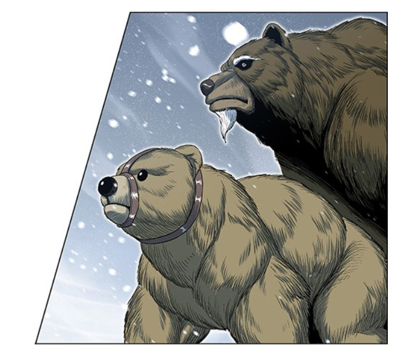
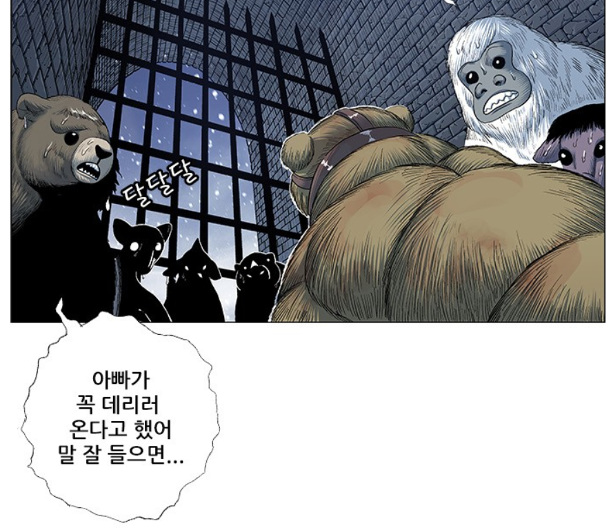
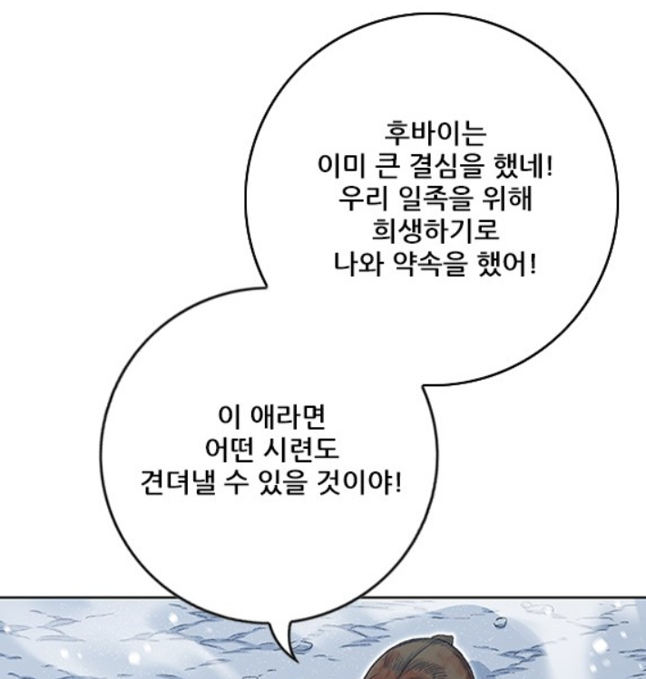
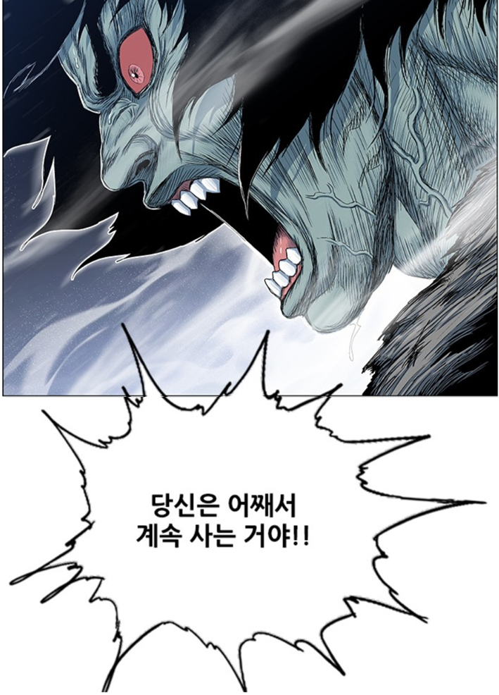
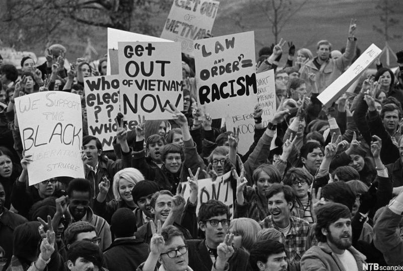
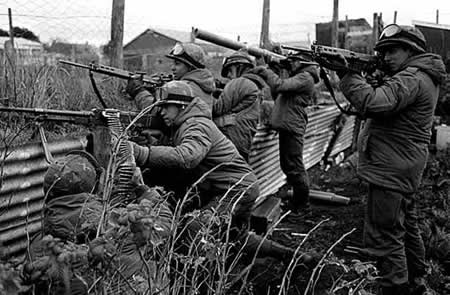
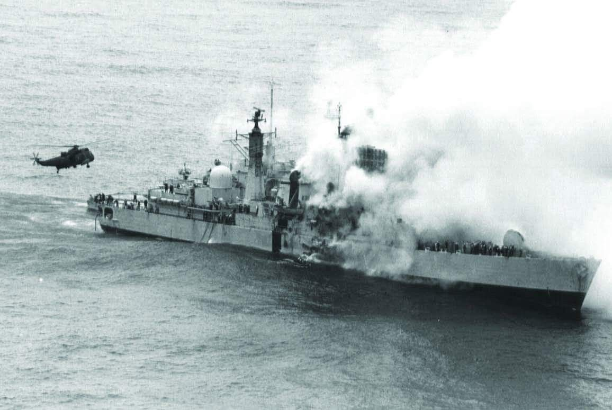
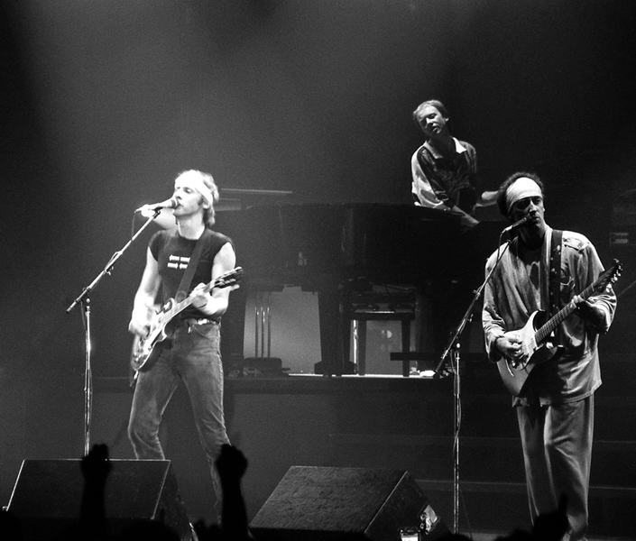

존 바에즈가 전우애를 노래했다 ? - Brothers In Arms 가사 해설
게시: 2019-12-19T06:30:29+09:00
최근에 열심히 보는 웹툰이 있습니다. '호랑이 형님'이라고 네이버에서 토요일에 연재하는 웹툰인데, 우리 전통 설화와 판타지와 조선 초기의 역사를 오밀조밀 짜맞춘 액션+귀요미+무협+의리 계열의 웹툰입니다. 제가 볼 때 정말 대단한 명작입니다. 링크는 아래와 같습니다. https://comic.naver.com/webtoon/list.nhn?titleId=650305&weekday=sat 나름대로 줄거리가 복잡한 만화라서 여기에서 설명을 하기는 좀 그렇고, 최근 줄거리를 요약하면 곰 일족의 수장이 일족의 목숨을 구하기 위해 일족의 새끼 중에서 가장 강한 새끼곰을 골라 끔찍한 고통을 겪을 용병으로 요괴들에게 보내는 사연이 나왔습니다. 그런데 그 장면에 우연히 끼어들게된 그런 용병 출신의 다른 짐승이 그런 현실에 대해 아래와 같이 분노하는 장면이 나왔는데, 제게는 참 인상적이더군요.
   
유발 하라리의 '사피엔스'라는 책을 저는 안 읽었고 제 와이프가 읽었는데, 제 와이프의 이 책 한줄 요약은 '실존하지 않는 개념상의 존재를 믿게 만든 것이 인간이 번성하게 된 이유'라고 하더군요. 꽤 말이 되는 이야기라고 저는 생각했습니다. 대표적인 것이 전쟁이지요. 국가나 민족, 이념 따위는 사람들 머리 속에서만 존재하는 개념일 뿐 사실 자연적으로는 아무런 실체가 없는 것에 불과합니다. 그런데도 그런 허깨비같은 것을 위해서 많은 젊은이들이 아무 죄도 없을 뿐만 아니라 만나 본 적도 없는 상대편 젊은이들을 죄책감도 느끼지 않고 마구 죽이는 것이 전쟁입니다. 그 과정에서 자기도 팔다리 혹은 목숨까지 잃게 된다는 것을 알면서도 그런 것에 뛰어들게 만들지요. 생각해보면 참 어처구니가 없는 일인데, 그런 것을 잘 하는 국가나 민족, 이념이 대제국을 건설하게 되는 것도 사실입니다. 자기 새끼 뿐만 아니라 직접 관계가 없는 동족의 이익을 위해 자신을 희생하는 것은 집단 생활을 하는 동물에게만 있는 일입니다. 저는 사람이 사회를 위해 자신을 희생하는 것이 개미나 꿀벌처럼 유전자에 코딩이 되어 있기 때문에 나타나는 기계적인 현상이라고 보지는 않습니다. 분명히 그건 명예와 이타주의적인 희생 정신에 의한 개인의 선택입니다. 그러나 자신은 그런 것을 위해 자신을 희생할 생각이 전혀 없으면서 그저 자신의 권력과 금전적 이익을 위해 남에게 그런 희생을 강요하는 것은 정말 분명히 인간에게서만 볼 수 있는 추악한 범죄라고 생각합니다. 그런 범죄를 규탄하는 것이 바로 반전 운동가들입니다. 반전 운동가들에 대해서는 곱지 않은 시선도 많습니다. 저도 그런 사람들이 언제나 꼭 옳다고만 주장하지는 못할 것 같습니다. 흔히 월남이 패망한 이유가 북베트남군이 잘 싸웠다기보다는 남베트남의 부패와 미국내 히피들의 반전 운동 때문에 졌다고 하지요. 글쎄요, 여기서는 일단 판단은 보류하시지요.

제가 좋아하는 가수인 존 바에즈도 그런 반전 노래를 많이 불렀을 뿐만 아니라 반전 운동에도 적극 참여하여 잠시 투옥된 경험도 있습니다. 그런 존 바에즈가 'Brothers in Arms'라는, 제목만 보면 전우애를 찬양하는 것 같은 노래를 불렀다고 하면 깜짝 놀랄 일입니다. 적어도 저는 흠칫 놀랐습니다. 그런데 그 가사는 왜 바에즈가 이 노래를 불렀는지 쉽게 납득이 가는 내용입니다. 원래 이 노래는 (주로 커버 송을 많이 부른 바에즈답게) 바에즈의 오리지널 송이 아니라 영국 록그룹 다이어 스트레이츠(Dire Straits)의 노래입니다. 다이어 스트레이츠의 리더 마크 노플러(Mark Knopfler)가 작사 작곡한 1985년 곡인데, 연도를 보면 짐작하시겠지만 영국과 아르헨티나 사이에 벌어진 포클랜드(Falkland) 전쟁을 배경으로 하고 있습니다. 마크 노플러는 이 전쟁에 참전했다가 외상후 스트레스 장애(post-traumatic stress disorder, PTSD)로 고통받는 병사들을 위해 이 곡을 만들었다고 합니다. 대부분의 국가들이, 특히 전사한 병사들을 위해서는 열렬한 찬양을 늘어놓고 부상병들에게도 찬양과 함께 약간의 금전적 도움을 주기는 하지만, 전투 경험이 주는 정신적 고통에 시달리는 병사들에 대해서는 별로 영광스럽지 못하다고 생각해서인지 명예를 기리지도 않고 그 보상과 치료에 대해서도 그다지 신경을 쓰지 않는 것 같습니다. 다이어 스트레이츠가 이 곡을 만든 것도 존 바에즈가 이 노래를 부른 것도 모두 그 때문인 모양입니다.
병사들의 희생은 숭고하지만 전쟁은 추악합니다. 그러나 그런 전쟁보다 더 추악한 것은 전쟁을 일으키는 자들입니다. 신께서 그들을 단죄하기를 바랍니다.


(저 개인적으로는 포클랜드 전쟁에서 프랑스제 엑조세 미사일 한 방에 영국 구축함 HMS Sheffield가 격침된 뉴스가 가장 기억에 남습니다. 당시 저 사건 이후 전세계가 엑조세 미사일 구매에 열을 올렸었지요. 당시 알루미늄으로 만들었던 영국 구축함들은 비싸기는 해도 가벼워서 빠르고 녹도 슬지 않고 유지정비 비용도 적게 들어서 평상시에는 너무나 만족스러웠답니다. 그러나 정작 실전에 투입시켜보니 강철로 만든 군함과 달리 열에 약해 흐물흐물 녹아버리는 바람에 미사일 한방이나 폭탄 한방에도 곧장 침몰해버렸다는 기사를 당시 신문에서 읽었던 기억이 납니다. )

(다이어 스트레이츠의 공연 모습입니다.)


웹툰을 보다가 생각난 이 노래의 오리지널 다이어 스트레이츠 버전은 아래에서 감상하실 수 있습니다. Dire Straits - Brothers In Arms https://youtu.be/zKhTBltFwto 그러나 제게는 역시 존 바에즈 버전이 훨씬 아름답습니다. Joan Baez - Brothers in Arms https://youtu.be/yjxNZH0qIe0 These mist covered mountains Are a home now for me But my home is the lowlands And always will be 안개로 뒤덮힌 이 산들 이제 내겐 집이나 다름없다네 하지만 내 고향은 저지대 내 고향은 항상 거기일 뿐 Someday you'll return to Your valleys and your farms And you'll no longer burn to be Brothers in arms 언젠가 그대들도 돌아가겠지 고향의 계곡과 농장으로 그리고 더 이상 전우애로 불타지 않을 거라네 Through these fields of destruction Baptisms of fire I've witnessed your suffering As the battle raged high 그 살육의 전장 불의 세례 속 난 그대들의 고통을 두 눈으로 보았다네 전투의 광기가 달아오르던 그 현장에서 And though they did hurt me so bad In the fear and alarm You did not desert me My brothers in arms 난 지독한 상처를 입었지 공포와 충격 속에서 그래도 그대들은 날 저버리지 않았네 나의 전우들여 There's so many different worlds So many different suns And we have just one world But we live in different ones 다양한 세계가 많이 있겠지 태양들도 그만큼 다양할걸세 우리에게 있는 건 단 하나의 세계 그런데도 우리는 서로 다른 세계에 사나봐 Now the sun's gone to hell and The moon's riding high Let me bid you farewell Every man has to die 태양은 지옥으로 떨어지고 달은 차올라가지 그대들에게 작별을 고하겠네 모든 사람은 결국 죽어야 하니까 But it's written in the starlight And every line in your palm We're fools to make war On our brothers in arms 하지만 별빛 속에 씌여있다네 그대들의 손금에도 말일세 전쟁을 벌이는 우리는 바보라고 바로 우리 전우들을 상대로 말이지